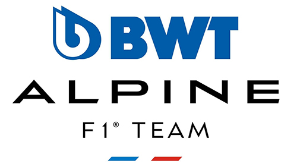

Alpine F1 Team

Alpine F1 Team (por motivos de patrocinio BWT Alpine F1 Team), es una escudería francesa de Fórmula 1 con sede en Reino Unido y propiedad del Grupo Renault, que
hizo su debut en la temporada 2021. Reemplazó a Renault para promocionar a Automobiles Alpine.
Como proveedor de motores (Renault F1 Team)
Su primera temporada como proveedor de motores para otros equipos fue en 1983, en exclusivo para Team Lotus. Hasta 1986 también motorizó a Ligier y Tyrrell.
En 1989, con la prohibición de los motores turbo, Renault regresó a Fórmula 1 nuevamente con sus motores impulsando los automóviles Williams y en 1992,
Williams-Renault ganó el campeonato de constructores. Este fue el inicio de la dominación de los motores Renault, con cinco campeonatos de pilotos (Mansell en 1992,
Prost en 1993, Schumacher en 1995, Hill en 1996 y Villeneuve en 1997) y seis de constructores entre 1992 y 1997.
Al finalizar la temporada 1997, Renault se retira nuevamente. Sin embargo, los motores siguieron siendo utilizados por Benetton Formula (bajo el nombre de Playlife),
Williams (bajo el nombre de Mecachrome) y por BAR y Arrows (bajo el nombre de Supertec).
Desde la temporada 2007, Renault suministra motores a la escudería Red Bull Racing (a partir de 2016 como TAG Heuer). Dicha asociación le dio los cuatro títulos de
constructores que poseen los austríacos. Desde su vuelta hasta 2017, también construyó motores para Team Lotus, Lotus F1 Team, Williams, Caterham y Toro Rosso.
En 2020, Renault provee a su propio equipo y a McLaren. A partir de 2021, la escudería de Woking dejará Renault para ser impulsado nuevamente por Mercedes